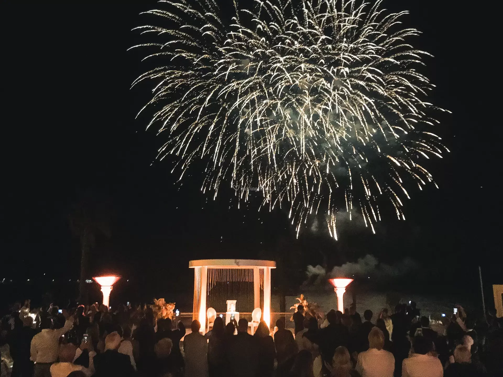

Pour commencer cette sublime journée,nous vous donnons tous RDV au Palm Beach où un atelier vous attend.Cet atelier consistera à construire de A à Z une piste de danse à notre effigie.Cette piste danse nous sera utile en fin de soirée afin de se divertir et exprimer notre joie.
"Il me sourit avec une sorte de complicité qui allait au-delà de la complicité. L'un de ces sourires singuliers qu'on ne rencontre que cinq ou six fois dans une vie, et qui vous rassure à jamais. Qui, après avoir jaugé - ou feint peut-être de jauger - le genre humain dans son ensemble, choisit de s'adresser à vous, poussé par un irrésistible préjugé favorable à votre égard. Qui vous comprend dans la mesure exacte où vous souhaitez qu'on vous comprenne, qui croit en vous comme vous aimeriez croire en vous-même, qui vous assure que l'impression que vous donnez est celle que vous souhaitez donner, celle d'être au meilleur de vous-même."Cette citation de F. S. Fitzgerald résume parfaitement l'amour que nous éprouvons l'un envers l'autre. Nous célébrerons cet amour avec la cérémonie de mariage qui se déroulera aux alentours de midi. Nous aurons comme officiant de cérémonie le Maire de Cannes (David Lisnard).
Animation très originale de Sophie, elle réalise sous les yeux de chacun de vos invités un souvenir qu’ils emporteront à la fin de la soirée : calligraphie artistique de leur prénom, tatouage éphémère ( main, épaule, bras, jambe…). Ils repartiront ainsi avec un joli souvenir.
L’animation makeup sera réalisée par ma meilleure amie Sophie. Elle réalisera sous les yeux des invités, des maquillages pour tout âges(enfants, adultes). Elle sera accompagnée d’une coiffeuse professionnelle pour vous concocter une coiffure extraordinaire. Laissez-vous tenter.
Rassemblez-vous tous à la plage du Palm Beach. Des châteaux gonflables seront à votre disposition pour vous amuser (convient à tous âges).Ambiance et amusement seront au RDV.
Après ces animations, il est grand temps de danser/faire la fête avec le traiteur qui nous prépare des cocktail, des apéritifs, et surtout le dîner du soir.Ensuite, nous pouvons danser sur la piste de danse construite plus tôt dans la journée.Les musiques dans la soirée serait en première partie majoritairement des musiques de Céline Dion d'Adèle, etc. .Et ensuite, on se tourne vers des musiques beaucoup plus classiques des années 90.
